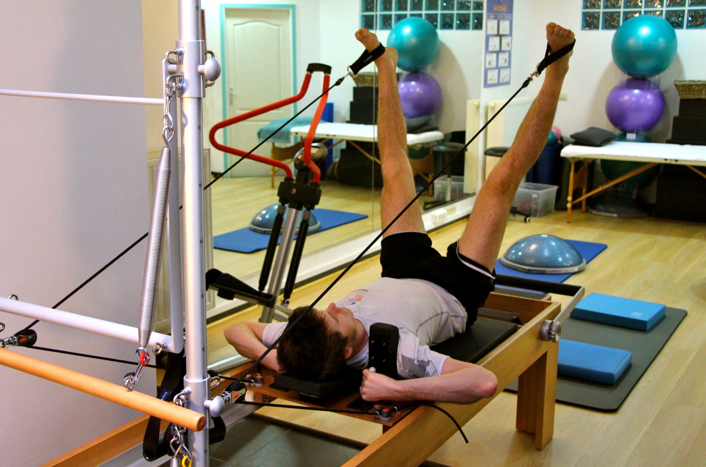
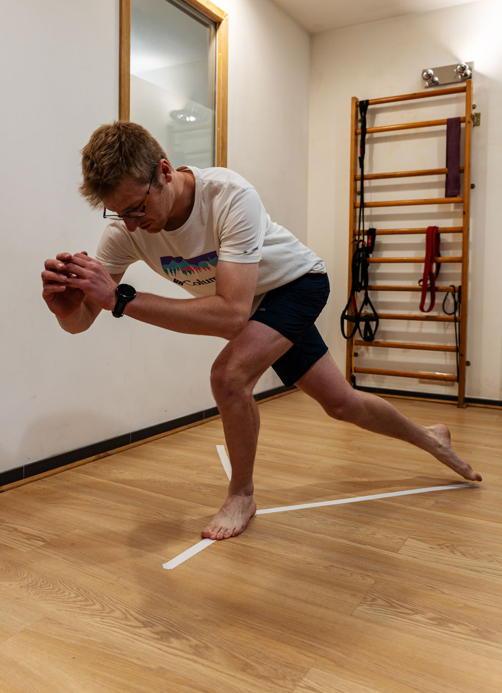
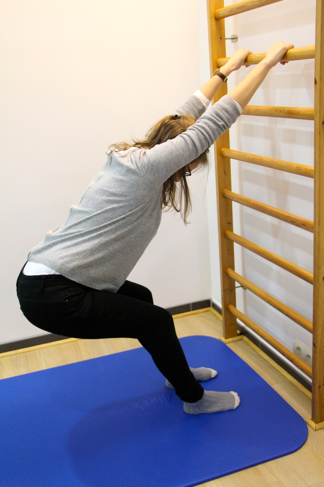
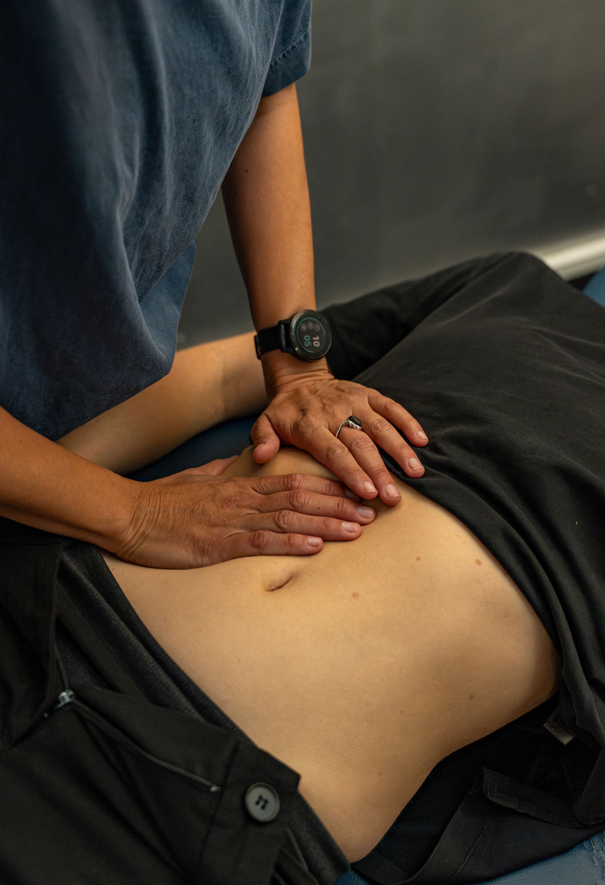
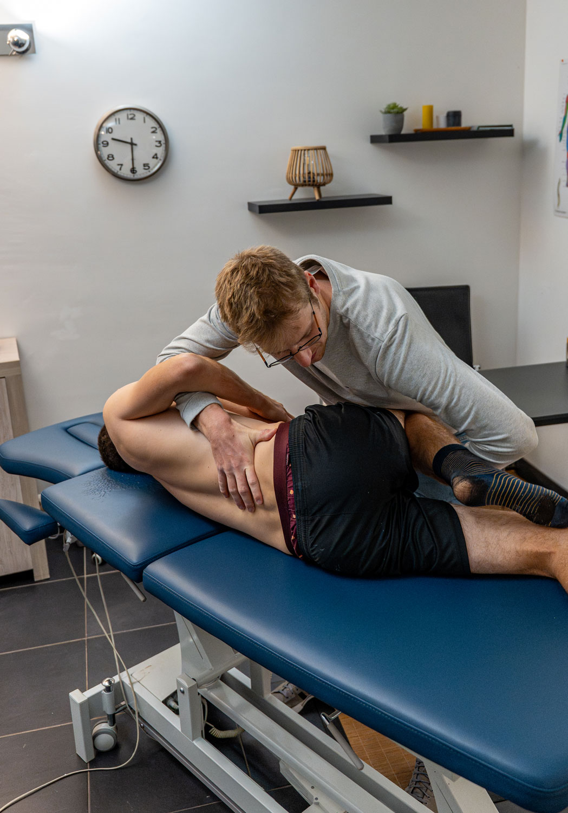

BIENVENUE au centre KinéFlagey
Cabinet de kinésithérapie à Flagey, Ixelles
Soins personnalisés dans un cabinet à taille humaine, une équipe qui vous écoute, un suivi sérieux… dans une ambiance conviviale.

Nos domaines d'intervention
Sportive
Ostéopathie
Orthopédie
Périnatale
ATM
Viscérale
Traumatologie

Le point de départ
Kinésithérapie générale
Une discipline qui utilise le mouvement pour traiter et rééduquer diverses affections.
La kinésithérapie générale peut avoir un objectif thérapeutique (récupération optimale des fonctions motrices) ou préventif (réduction des risques de récidive).
Nos traitements incluent :
- Techniques manuelles : étirements, mobilisations articulaires
- Rééducation post-traumatique (hors sport)
- Pathologies neurologiques (hémiplégie, etc.)
- Maintien de l'autonomie des personnes âgées
Que ce soit pour soulager une douleur, améliorer votre mobilité ou prévenir des blessures, nous adaptons chaque prise en charge à vos besoins.
Praticiens spécialisés


Thérapie Manuelle
Ostéopathie
Une approche manuelle globale pour restaurer l'équilibre du corps.
L’ostéopathie est une thérapie manuelle qui vise à rétablir l’équilibre du corps et à améliorer sa mobilité.
L’ostéopathie s’adresse aux :
- Douleurs musculaires et articulaires (lombalgies, cervicalgies…).
- Troubles fonctionnels (migraines, digestions…).
- Suivi des sportifs.
L’ostéopathie s’intègre parfaitement dans une prise en charge pluridisciplinaire. Elle permet de soulager, prévenir et améliorer la qualité de vie grâce à une approche globale et personnalisée.
Praticiens spécialisés



Performance & Récupération
Kinésithérapie sportive
Plus poussée que la kinésithérapie générale pour le bien-être des sportifs.
Spécialisée dans la prise en charge des pathologies liées à l’activité physique, la kinésithérapie sportive vise à traiter, prévenir et réhabiliter les blessures chez les sportifs, amateurs ou professionnels.
Nos domaines d’intervention :
- Traitement des blessures aiguës .(entorses, claquages, déchirures)
- Rééducation des tendinopathies et surutilisation musculaire.
- Préparation physique et prévention des récidives.
Nous travaillons à optimiser vos performances et à vous aider à retrouver rapidement votre niveau d’activité.
Praticiens spécialisés



Maternité & Bien-être
Kinésithérapie pré/post-natale
Un accompagnement sur mesure pour les futures et jeunes mamans.
La kinésithérapie périnatale accompagne les femmes tout au long de leur grossesse et après l’accouchement.
- Préparation à l’accouchement : techniques respiratoires et gestion des efforts pour vivre sereinement cet événement.
- Rééducation post-natale : récupération de la tonicité abdominale et périnéale pour prévenir les troubles liés à la grossesse.
Un suivi adapté contribue à améliorer le bien-être de la mère et à favoriser une récupération optimale.
Praticiens spécialisés

Spécialisation
Kinésithérapie maxillo-faciale
Soulagement des douleurs et troubles de la mâchoire (ATM).
Cette spécialisation traite les dysfonctionnements de l’articulation temporo-mandibulaire (ATM), essentielle à des fonctions comme la mastication et la parole.
Indications courantes :
- Douleurs de la mâchoire ou de la nuque.
- Céphalées liées à des tensions musculaires.
- Troubles post-traumatiques ou post-dentaires.
Nos techniques permettent de réduire les douleurs et d’améliorer la mobilité pour un confort quotidien retrouvé.
Praticiens spécialisés

Santé Pelvienne
Kinésithérapie périnéale
Rééducation et renforcement du plancher pelvien pour tous.
La kinésithérapie périnéale cible le renforcement et la rééducation du plancher pelvien.
Ce traitement est particulièrement recommandé pour :
- La gestion des troubles fonctionnels (incontinence, douleurs pelviennes).
- La rééducation après l’accouchement.
- Le suivi post-chirurgical (prolapsus, prostatectomie).
Nous utilisons des techniques personnalisées et progressives pour vous aider à retrouver confort et fonctionnalité.
Praticiens spécialisés

Rééducation
Orthopédie & Traumatologie
Récupération optimale après une blessure ou une chirurgie.
Nous accompagnons nos patients dans leur rééducation après :
- Fractures.
- Entorses et luxations.
- Chirurgies orthopédiques (prothèses, ligamentoplasties).
Notre objectif : restaurer votre mobilité et votre autonomie grâce à des protocoles adaptés, alliant thérapie manuelle et exercices spécifiques.
Praticiens spécialisés

Approche Holistique
Kinésithérapie viscérale
Traitement manuel des organes pour un meilleur équilibre fonctionnel.
La kinésithérapie viscérale se concentre sur le traitement des organes internes pour améliorer leur mobilité et leur fonction.
Indications courantes :
- Troubles digestifs (constipation, reflux).
- Douleurs pelviennes chroniques.
- Problèmes respiratoires liés à la mobilité diaphragmatique.
Grâce à des techniques manuelles spécifiques, nous aidons à restaurer l’équilibre et la fonctionnalité de vos organes pour un bien-être global.
Praticiens spécialisés
Nos services complémentaires
Pilates

Le Pilates est une méthode douce mais efficace qui vise à renforcer les muscles profonds, améliorer la posture, et augmenter la souplesse.
Nos cours collectifs de Pilates sont conçus pour tous les niveaux, que vous soyez débutant ou pratiquant confirmé.
Pourquoi choisir le Pilates ?
-
Renforcement musculaire : Travail ciblé des muscles stabilisateurs, notamment ceux du dos, de l’abdomen, et du plancher pelvien.
-
Amélioration de la posture : Rééquilibre musculaire pour soulager les tensions et prévenir les douleurs.
-
Souplesse et mobilité : Étirements progressifs pour favoriser l’amplitude de mouvement et la fluidité.
-
Gestion du stress : Une pratique calme et contrôlée qui améliore la concentration et favorise le bien-être mental.
Les spécificités de nos cours :
-
Encadrement professionnel : Chaque séance est animée par un kinésithérapeute formé en Pilates, garantissant une pratique adaptée et sécurisée.
-
Petit groupe : Pour un suivi personnalisé et une meilleure qualité d’accompagnement.
-
Adaptation individuelle : Les exercices sont modulés en fonction des besoins et des capacités de chaque participant.
Nutrition

Nous proposons un accompagnement personnalisé en nutrition pour vous aider à optimiser votre santé, vos performances sportives, et votre bien-être global.
Grâce à une approche basée sur vos besoins individuels, nous élaborons des solutions adaptées pour atteindre vos objectifs, qu’il s’agisse d’une amélioration de l’énergie, de la récupération, ou de la gestion du poids.
En savoir plus :
nutrio.beAnalyse de la course à pied
Nous avons suivi des formations spécialisées auprès de La Clinique du Coureur, une référence mondiale en prévention des blessures liées à la course à pied.
Notre expertise nous permet d’offrir un accompagnement personnalisé aux coureurs de tous niveaux.
Nos séances incluent :
Analyse de la course sur tapis
Observation de la technique de course, cadence, et biomécanique pour détecter les éventuels déséquilibres ou inefficacités.
Évaluation spécifique
Contrôle moteur, tests de mobilité, force, stabilité du tronc (core stability), et souplesse pour identifier les axes d’amélioration.
Conseils & Prévention des blessures
Exercices adaptés à vos besoins, recommandations sur le choix de chaussures et ajustements techniques pour réduire les risques de blessure.
Programme d’entraînement
Élaboration d’un plan adapté à vos objectifs, qu’il s’agisse de performance, d’endurance, ou de récupération après une blessure.
Nos techniques & approches
Thérapie Manuelle
Dry Needling
Crochetage
Ondes de choc
Thérapie Manuelle
La thérapie manuelle orthopédique est une spécialisation dédiée aux troubles du système neuro-musculo-squelettique. Elle s’appuie sur des techniques de traitement fondées sur des preuves scientifiques pour soulager la douleur et restaurer une fonction optimale.
Nos interventions incluent :
- Mobilisations articulaires
- Techniques passives et activo-passives
- Exercices de contrôle moteur spécifiques
Nous adoptons une approche globale du patient, intégrant les dimensions biologiques, psychologiques et sociales pour une prise en charge complète et durable.
Dry Needling
Le Dry Needling est une technique efficace pour soulager les douleurs musculaires et traiter les points trigger.
Indications :
- Contractures chroniques
- Douleurs myofasciales
- Réduction des tensions musculaires profondes
Crochetage
Le crochetage est une méthode de traitement myofascial utilisant des outils spécifiques pour :
- Libérer les adhérences tissulaires
- Réduire les douleurs chroniques et inflammatoires
- Restaurer la mobilité des tissus
Ondes de choc
Les ondes de choc sont une technique innovante pour traiter les douleurs chroniques et stimuler la régénération tissulaire.
Indications :
- Tendinopathies (épaule, coude, talon)
- Enthésopathies
- Points de calcification
Cette technologie permet une guérison accélérée et une amélioration notable des douleurs musculo-squelettiques.



Notre équipe
Gilles PIRAUX
Kiné du sport, Ostéopathe

Maria KALALA BELTRAN
Uro-gynécologie

Olivier VAN ROY
Kiné du sport

Fanny GARO
Uro-gynécologie

Simon LE CLEF
Ostéopathe

Mathilde ESCOYEZ
Kiné générale

Thomas BASTARD
Kiné du sport, Course à pied

Marie Inès KONINCKX
Kiné générale
Aucun praticien ne correspond aux filtres sélectionnés.
Le cabinet
140 m²
dédiés à votre santé3 salles
de soins individuelsNotre cabinet vous accueille dans un espace moderne et entièrement équipé, pensé pour votre confort et une rééducation optimale.
Un plateau technique complet :
Tapis de course, vélos, reformer Pilates, ondes de choc, pressothérapie, et tout le matériel nécessaire (Bosu, Swiss-ball, etc.) pour une rééducation efficace et une préparation sportive de pointe.


let’s stay in touch !
Contact & infos pratiques
Une question ? un conseil ?
Si nous ne vous répondons pas immédiatement, privilégiez de nous laisser un sms, nous essayerons de vous recontacter le plus rapidement possible.
Si vous avez besoin d’information, vous pouvez également nous envoyer un mail via notre formulaire ou directement à info@kineflagey.com.
Horaires
- Lundi – Vendredi :
- 08:00 – 19:30 (sur rendez-vous)
Venir au cabinet
- 38, 60, 71 – Malibran (en face)
- 95, 60 – Blyckaerts (270m)
- 59 – Wery (350m) / Flagey (400m)
- 81 – Flagey (400m)
Questions fréquentes
Comment prendre rendez-vous ?
- En ligne : en cliquant sur Prendre un rendez-vous.
- Par téléphone : 0468 36 56 18.
- Par email : info@kineflagey.com ou via le formulaire de contact.
-
N'hésitez pas à privilégier un SMS ou un message vocal si nous ne pouvons pas répondre, nous vous recontacterons rapidement.
Vous pouvez également joindre et prendre rendez-vous directement avec chacun de nos praticiens via leur fiche contact ( Equipe ) en suivant le lien vers Rosa.be.
Le cabinet est-il conventionné ?
Oui, tous nos kinésithérapeutes sont conventionnés INAMI.
Cela signifie que nos tarifs sont conformes aux barèmes officiels et que votre mutuelle rembourse environ 75% du coût de la séance (selon votre statut).
Faut-il une prescription médicale ?
Oui, une prescription de votre médecin est nécessaire pour commencer un traitement de kinésithérapie et bénéficier du remboursement de votre mutuelle. Pour l'ostéopathie, aucune prescription n'est requise.
Que dois-je apporter pour ma première séance ?
Pour votre premier rendez-vous, veuillez vous munir de :
- Votre prescription médicale.
- Une vignette de mutuelle.
- Éventuels examens (radios, IRM...).
- Une tenue confortable.
Combien de temps dure une séance ?
Une séance dure en moyenne 30 minutes. La durée peut varier en fonction de votre pathologie et du plan de traitement établi par votre praticien.
Que faire en cas d'annulation ?
Toute séance non annulée au minimum 24 heures à l'avance vous sera facturée. Nous vous remercions de nous prévenir le plus tôt possible pour permettre à un autre patient de bénéficier du créneau.